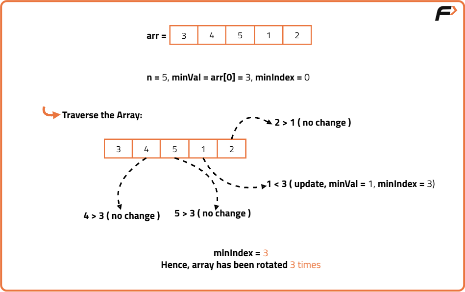
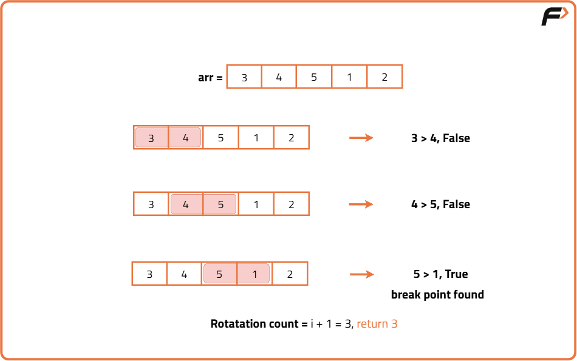

Find out how many times the array has been rotated
Problem Statement: Given an integer array arr of size N, sorted in ascending order (with distinct values). Now the array is rotated between 1 to N times which is unknown. Find how many times the array has been rotated.
Pre-requisites: Find minimum in Rotated Sorted Array, Search in Rotated Sorted Array II & Binary Search algorithm
Examples
Input : arr = [4,5,6,7,0,1,2,3] Result: 4 Explanation: The original array should be [0,1,2,3,4,5,6,7]. So, we can notice that the array has been rotated 4 times.
Input : arr = [3,4,5,1,2] Output : 3 Explanation: The original array should be [1,2,3,4,5]. So, we can notice that the array has been rotated 3 times.
Disclaimer: Don’t jump directly to the solution, try it out yourself first.
Brute force Approach
Algorithm
Think of it like standing at the start of the circle and walking forward until you find the smallest number then count how many steps it took to get there. That step count is your answer.
- Store the first element as a reference.
- Initialize a variable to track the smallest element's index.
- Iterate through every element of the array.
- If you find an element smaller than the stored smallest, update the smallest and store its index.
- Once the loop ends, return the index of the smallest element that’s the number of rotations.

Code
#include <bits/stdc++.h>
using namespace std;
class Solution {
public:
// Function to find the number of rotations in a rotated sorted array
int findRotations(vector<int>& arr) {
// Store size of array
int n = arr.size();
// Assume the first element is the smallest
int minVal = arr[0];
// Index of the smallest element
int minIndex = 0;
// Traverse the array
for (int i = 1; i < n; i++) {
// If current element is smaller than minVal, update
if (arr[i] < minVal) {
minVal = arr[i];
minIndex = i;
}
}
// The index of smallest element = number of rotations
return minIndex;
}
};
int main() {
Solution obj;
// Example input
vector<int> arr = {4,5,6,7,0,1,2,3};
// Call the function and store result
int rotations = obj.findRotations(arr);
// Print result
cout << rotations << endl;
return 0;
}
Complexity Analysis
Time Complexity: O(n),We scan the entire array once to find the smallest element, where n is the size of the array.
Space Complexity: O(1),We only use a few extra variables to store the minimum value and its index, so the extra space used is constant.
Better Approach
Algorithm
- Traverse the array from the first element to the second-last element.
- At each step, check if the current element is greater than the next element.
- If such a break is found, return the index of the next element (that index is the rotation count).
- If no break is found after the full pass, return 0 (array not rotated).

Code
#include <bits/stdc++.h>
using namespace std;
// Function to find rotation count using one-pass scan
int findRotationCount(vector<int> &arr) {
// Get the size of the array
int n = arr.size();
// Traverse the array till second-last element
for (int i = 0; i < n - 1; i++) {
// If current element is greater than the next, break point found
if (arr[i] > arr[i + 1]) {
// Rotation count is index of next element
return i + 1;
}
}
// If no break point found, array not rotated
return 0;
}
int main() {
// Example input
vector<int> arr = {3, 4, 5, 1, 2};
// Function call to get rotation count
int rotations = findRotationCount(arr);
// Output the result
cout << rotations << endl;
return 0;
}
Complexity Analysis
Time Complexity: O(n),We traverse the array once to find the rotation point, where n is the size of the array.
Space Complexity: O(1),Only a few extra variables are used regardless of input size, so constant space.
Optimal Approach
Algorithm
Imagine searching for the break in a long sorted belt by cutting it in halves repeatedly instead of scanning all the way through.
- Initialize low = 0 and high = n - 1.
- While low is less than high:
- Find mid index.
- If the element at mid is greater than the element at high, the rotation point is after mid, so update low = mid + 1.
- Else, the rotation point is at mid or before it, so update high = mid.
- When low meets high, that index is the rotation count (index of smallest element).
Code
#include <bits/stdc++.h>
using namespace std;
class Solution {
public:
// Function to find rotation count using binary search
int findRotations(vector<int>& arr) {
// Initialize low and high pointers
int low = 0;
int high = arr.size() - 1;
// Loop until low meets high
while (low < high) {
// Find mid index
int mid = low + (high - low) / 2;
// If mid element is greater than element at high,
// smallest element lies to the right of mid
if (arr[mid] > arr[high]) {
low = mid + 1;
} else {
// Else smallest element is at mid or to the left
high = mid;
}
}
// When low == high, we found the smallest element
return low;
}
};
int main() {
Solution sol;
vector<int> arr = {4,5,6,7,0,1,2,3};
int rotations = sol.findRotations(arr);
cout << rotations << endl;
return 0;
}
Complexity Analysis
Time Complexity: O(log n),The binary search halves the search space each iteration, where n is the size of the array.
Space Complexity: O(1),Only a few variables are used regardless of input size, so constant extra space.